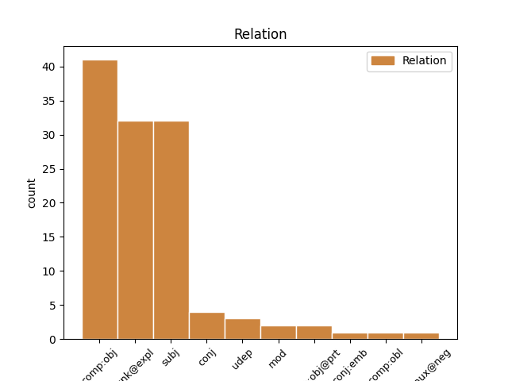
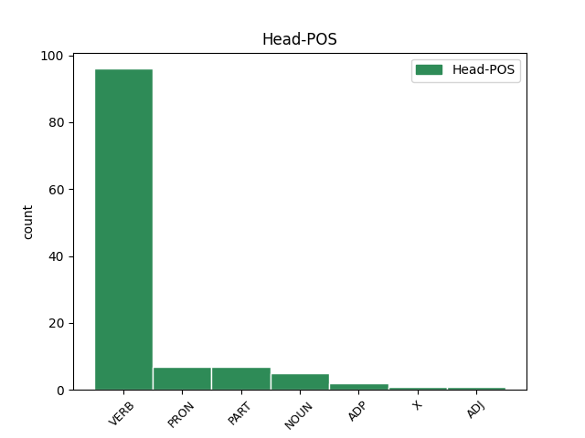
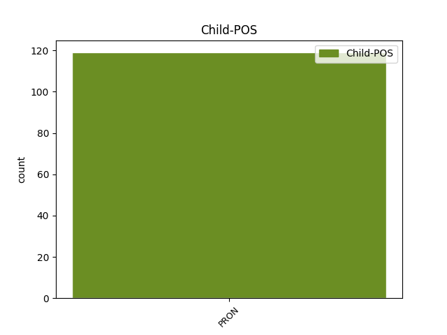

Distribution of features within this leaf



Agreement Rules sorted by frequency.
- When the dependent token is the direct object complements(comp:obj) of the head token, and the head token is VERB and the dependent token is PRON.
1 Tiez tiez VERB _ Number=Sing|Person=2 0 _ _ _
2 - _ _ _ _ 0 _ _ _
3 te te PRON _ Number=Sing|Person=2 1 comp:obj _ _
4 a _ _ _ _ 0 _ _ _
5 zo _ _ _ _ 0 _ _ _
6 niverus _ _ _ _ 0 _ _ _
7 e _ _ _ _ 0 _ _ _
8 Beijing _ _ _ _ 0 _ _ _
9 hag _ _ _ _ 0 _ _ _
10 an _ _ _ _ 0 _ _ _
11 te _ _ _ _ 0 _ _ _
12 a _ _ _ _ 0 _ _ _
13 zo _ _ _ _ 0 _ _ _
14 ur _ _ _ _ 0 _ _ _
15 perzh _ _ _ _ 0 _ _ _
16 pouezhus _ _ _ _ 0 _ _ _
17 eus _ _ _ _ 0 _ _ _
18 ar _ _ _ _ 0 _ _ _
19 sevenadur _ _ _ _ 0 _ _ _
20 lec'hiel _ _ _ _ 0 _ _ _
21 . _ _ _ _ 0 _ _ _
1 E _ _ _ _ 0 _ _ _
2 Flandrez _ _ _ _ 0 _ _ _
3 Frañs _ _ _ _ 0 _ _ _
4 en en PRON _ Person=3 6 unk@expl _ _
5 em _ _ _ _ 0 _ _ _
6 astenn _ VERB _ Mood=Ind|Number=Plur|Person=3|Tense=Pres|VerbForm=Fin 0 _ _ _
7 plaenenn _ _ _ _ 0 _ _ _
8 al _ _ _ _ 0 _ _ _
9 Leie _ _ _ _ 0 _ _ _
10 , _ _ _ _ 0 _ _ _
11 ledan _ _ _ _ 0 _ _ _
12 ha _ _ _ _ 0 _ _ _
13 plaen _ _ _ _ 0 _ _ _
14 . _ _ _ _ 0 _ _ _
1 Kavet _ _ _ _ 0 _ _ _
2 e _ _ _ _ 0 _ _ _
3 vez _ _ _ _ 0 _ _ _
4 levrioù _ _ _ _ 0 _ _ _
5 Bécassine _ _ _ _ 0 _ _ _
6 ha _ _ _ _ 0 _ _ _
7 pompinelloù _ _ _ _ 0 _ _ _
8 diouzh _ _ _ _ 0 _ _ _
9 he he PRON _ Gender=Masc|Number=Sing|Person=3|PronType=Prs 10 subj _ _
10 skeudenn _ VERB _ Mood=Ind|Number=Plur|Person=3|Tense=Pres|VerbForm=Fin 0 _ _ _
11 er _ _ _ _ 0 _ _ _
12 stalioù _ _ _ _ 0 _ _ _
13 da _ _ _ _ 0 _ _ _
14 brofañ _ _ _ _ 0 _ _ _
15 d'ar _ _ _ _ 0 _ _ _
16 vugale _ _ _ _ 0 _ _ _
17 . _ _ _ _ 0 _ _ _
1 Un _ _ _ _ 0 _ _ _
2 deiz _ _ _ _ 0 _ _ _
3 ha ha VERB _ Mood=Ind|Number=Sing|Person=3|Tense=Pres|VerbForm=Fin 0 _ _ _
4 tregont _ _ _ _ 0 _ _ _
5 zo _ _ _ _ 0 _ _ _
6 ennañ _ _ _ _ 0 _ _ _
7 , _ _ _ _ 0 _ _ _
8 unan _ _ _ _ 0 _ _ _
9 eus _ _ _ _ 0 _ _ _
10 ar _ _ _ _ 0 _ _ _
11 mizioù _ _ _ _ 0 _ _ _
12 hirañ _ _ _ _ 0 _ _ _
13 eo is PRON _ Case=Abl|Gender=Masc|Number=Sing|Person=3|PronType=Prs 3 mod _ _
14 eta _ _ _ _ 0 _ _ _
15 . _ _ _ _ 0 _ _ _
1 Koulskoude _ _ _ _ 0 _ _ _
2 e _ _ _ _ 0 _ _ _
3 pouez _ _ _ _ 0 _ _ _
4 kalz _ _ _ _ 0 _ _ _
5 ar _ _ _ _ 0 _ _ _
6 c'hresk _ _ _ _ 0 _ _ _
7 bras _ _ _ _ 0 _ _ _
8 - _ _ _ _ 0 _ _ _
9 se _ _ _ _ 0 _ _ _
10 war _ _ _ _ 0 _ _ _
11 an _ _ _ _ 0 _ _ _
12 douaroù _ _ _ _ 0 _ _ _
13 en _ _ _ _ 0 _ _ _
14 tachad _ _ _ _ 0 _ _ _
15 glas _ _ _ _ 0 _ _ _
16 tro _ _ _ _ 0 _ _ _
17 - _ _ _ _ 0 _ _ _
18 dro _ _ _ _ 0 _ _ _
19 da _ _ _ _ 0 _ _ _
20 Zinedin _ _ _ _ 0 _ _ _
21 , _ _ _ _ 0 _ _ _
22 dreist _ _ _ _ 0 _ _ _
23 - _ _ _ _ 0 _ _ _
24 holl _ _ _ _ 0 _ _ _
25 er _ _ _ _ 0 _ _ _
26 c'hornôg _ _ _ _ 0 _ _ _
27 e _ _ _ _ 0 _ _ _
28 lec'h _ _ _ _ 0 _ _ _
29 m'en _ PART _ Number=Sing|Person=1 0 _ _ _
30 em em PRON _ Number=Sing|Person=1 29 comp:obj@prt _ _
31 led _ _ _ _ 0 _ _ _
32 fonnus _ _ _ _ 0 _ _ _
33 an _ _ _ _ 0 _ _ _
34 embregerezhioù _ _ _ _ 0 _ _ _
35 hag _ _ _ _ 0 _ _ _
36 an _ _ _ _ 0 _ _ _
37 tiez _ _ _ _ 0 _ _ _
38 - _ _ _ _ 0 _ _ _
39 annez _ _ _ _ 0 _ _ _
40 . _ _ _ _ 0 _ _ _
1 Hervez _ _ _ _ 0 _ _ _
2 ar _ _ _ _ 0 _ _ _
3 Strollad _ _ _ _ 0 _ _ _
4 e _ _ _ _ 0 _ _ _
5 - _ _ _ _ 0 _ _ _
6 unan _ _ _ _ 0 _ _ _
7 eo _ _ _ _ 0 _ _ _
8 Adsav _ _ _ _ 0 _ _ _
9 ur _ _ _ _ 0 _ _ _
10 strollad _ _ _ _ 0 _ _ _
11 hag _ _ _ _ 0 _ _ _
12 a _ _ _ _ 0 _ _ _
13 stourm _ _ _ _ 0 _ _ _
14 evit _ _ _ _ 0 _ _ _
15 gwirioù _ _ _ _ 0 _ _ _
16 Pobl _ _ _ _ 0 _ _ _
17 Breizh _ _ _ _ 0 _ _ _
18 en _ _ _ _ 0 _ _ _
19 ur _ _ _ _ 0 _ _ _
20 nac'hañ _ _ _ _ 0 _ _ _
21 an _ _ _ _ 0 _ _ _
22 diforc'h _ _ _ _ 0 _ _ _
23 politikel _ _ _ _ 0 _ _ _
24 tu tu PRON _ Number=Sing|Person=2|PronType=Prs 0 _ _ _
25 kleiz _ _ _ _ 0 _ _ _
26 / _ _ _ _ 0 _ _ _
27 tu tu PRON _ Number=Sing|Person=2|PronType=Prs 24 conj _ _
28 dehoù _ _ _ _ 0 _ _ _
29 . _ _ _ _ 0 _ _ _
1 En _ _ _ _ 0 _ _ _
2 arvar _ _ _ _ 0 _ _ _
3 bras _ _ _ _ 0 _ _ _
4 emañ _ VERB _ Mood=Ind|Number=Sing|Person=3|Tense=Pres|VerbForm=Fin 0 _ _ _
5 ha _ _ _ _ 0 _ _ _
6 posupl _ _ _ _ 0 _ _ _
7 eo _ _ _ _ 0 _ _ _
8 ez _ _ _ _ 0 _ _ _
9 eo is PRON _ Case=Abl|Gender=Masc|Number=Sing|Person=3|PronType=Prs 4 conj _ _
10 aet _ _ _ _ 0 _ _ _
11 da _ _ _ _ 0 _ _ _
12 get _ _ _ _ 0 _ _ _
13 . _ _ _ _ 0 _ _ _
1 Ret _ _ _ _ 0 _ _ _
2 e _ _ _ _ 0 _ _ _
3 voe _ VERB _ Gender=Masc|Number=Sing|Person=3|Tense=Past 0 _ _ _
4 dezhañ dezh PRON _ Case=All|Number=Sing|Person=3|PronType=Prs 3 comp:obl _ _
5 servijout _ _ _ _ 0 _ _ _
6 ar _ _ _ _ 0 _ _ _
7 tsar _ _ _ _ 0 _ _ _
8 Aleksandr _ _ _ _ 0 _ _ _
9 II _ _ _ _ 0 _ _ _
10 , _ _ _ _ 0 _ _ _
11 e _ _ _ _ 0 _ _ _
12 lez _ _ _ _ 0 _ _ _
13 ar _ _ _ _ 0 _ _ _
14 tsar _ _ _ _ 0 _ _ _
15 e _ _ _ _ 0 _ _ _
16 voe _ _ _ _ 0 _ _ _
17 heuget _ _ _ _ 0 _ _ _
18 gant _ _ _ _ 0 _ _ _
19 emzalc’h _ _ _ _ 0 _ _ _
20 ar _ _ _ _ 0 _ _ _
21 gourtizaned _ _ _ _ 0 _ _ _
22 . _ _ _ _ 0 _ _ _
1 En _ _ _ _ 0 _ _ _
2 ugentvet _ _ _ _ 0 _ _ _
3 kantved _ _ _ _ 0 _ _ _
4 avat _ _ _ _ 0 _ _ _
5 e _ _ _ _ 0 _ _ _
6 voe voe NOUN _ Mood=Ind|Number=Sing|Person=3|Tense=Past|VerbForm=Fin 0 _ _ _
7 kroget _ _ _ _ 0 _ _ _
8 da _ _ _ _ 0 _ _ _
9 ober _ _ _ _ 0 _ _ _
10 gant _ _ _ _ 0 _ _ _
11 al _ _ _ _ 0 _ _ _
12 lizherennoù _ _ _ _ 0 _ _ _
13 moull _ _ _ _ 0 _ _ _
14 a _ _ _ _ 0 _ _ _
15 reer _ _ _ _ 0 _ _ _
16 ganto _ _ _ _ 0 _ _ _
17 e _ _ _ _ 0 _ _ _
18 saozneg _ _ _ _ 0 _ _ _
19 pe _ _ _ _ 0 _ _ _
20 e _ _ _ _ 0 _ _ _
21 brezhoneg _ _ _ _ 0 _ _ _
22 ha _ _ _ _ 0 _ _ _
23 hiziv _ _ _ _ 0 _ _ _
24 ez _ _ _ _ 0 _ _ _
25 eo is PRON _ Case=Abl|Gender=Masc|Number=Sing|Person=3|PronType=Prs 6 conj _ _
26 an _ _ _ _ 0 _ _ _
27 doare _ _ _ _ 0 _ _ _
28 - _ _ _ _ 0 _ _ _
29 se _ _ _ _ 0 _ _ _
30 a _ _ _ _ 0 _ _ _
31 vez _ _ _ _ 0 _ _ _
32 implijet _ _ _ _ 0 _ _ _
33 . _ _ _ _ 0 _ _ _
1 Nag _ _ _ _ 0 _ _ _
2 un _ _ _ _ 0 _ _ _
3 den _ _ _ _ 0 _ _ _
4 kozh _ _ _ _ 0 _ _ _
5 ansien _ _ _ _ 0 _ _ _
6 , _ _ _ _ 0 _ _ _
7 din din PRON _ Mood=Imp|Number=Sing|Person=2|VerbForm=Fin 10 subj _ _
8 - _ _ _ _ 0 _ _ _
9 me _ _ _ _ 0 _ _ _
10 ' ' X _ Number=Sing|Person=2 0 _ _ _
11 n _ _ _ _ 0 _ _ _
12 oe _ _ _ _ 0 _ _ _
13 lavaret _ _ _ _ 0 _ _ _
14 : _ _ _ _ 0 _ _ _
1 Nemet _ _ _ _ 0 _ _ _
2 e _ _ _ _ 0 _ _ _
3 ti ti PRON _ Clitic=Yes|Number=Sing|Person=2|PronType=Prs 0 _ _ _
4 ar _ _ _ _ 0 _ _ _
5 vamm _ _ _ _ 0 _ _ _
6 e _ _ _ _ 0 _ _ _
7 vo vo PRON _ Number=Plur|Person=2|PronType=Prs 3 conj:emb _ _
8 atav _ _ _ _ 0 _ _ _
9 un _ _ _ _ 0 _ _ _
10 tamm _ _ _ _ 0 _ _ _
11 « _ _ _ _ 0 _ _ _
12 melleg _ _ _ _ 0 _ _ _
13 » _ _ _ _ 0 _ _ _
14 evit _ _ _ _ 0 _ _ _
15 ar _ _ _ _ 0 _ _ _
16 « _ _ _ _ 0 _ _ _
17 mabig _ _ _ _ 0 _ _ _
18 choj _ _ _ _ 0 _ _ _
19 » _ _ _ _ 0 _ _ _
20 . _ _ _ _ 0 _ _ _
1 Lavaret _ _ _ _ 0 _ _ _
2 e _ _ _ _ 0 _ _ _
3 vez vez NOUN _ Aspect=Hab|Mood=Ind|Number=Sing|Person=3|Polarity=Pos|Tense=Pres 0 _ _ _
4 eo is PRON _ Case=Abl|Gender=Masc|Number=Sing|Person=3|PronType=Prs 3 comp:obj _ _
5 luget _ _ _ _ 0 _ _ _
6 kenetrezo _ _ _ _ 0 _ _ _
7 ar _ _ _ _ 0 _ _ _
8 mein _ _ _ _ 0 _ _ _
9 eus _ _ _ _ 0 _ _ _
10 an _ _ _ _ 0 _ _ _
11 hevelep _ _ _ _ 0 _ _ _
12 liv _ _ _ _ 0 _ _ _
13 zo _ _ _ _ 0 _ _ _
14 stok _ _ _ _ 0 _ _ _
15 - _ _ _ _ 0 _ _ _
16 ha _ _ _ _ 0 _ _ _
17 - _ _ _ _ 0 _ _ _
18 stok _ _ _ _ 0 _ _ _
19 ( _ _ _ _ 0 _ _ _
20 en _ _ _ _ 0 _ _ _
21 ur _ _ _ _ 0 _ _ _
22 heuliañ _ _ _ _ 0 _ _ _
23 linennoù _ _ _ _ 0 _ _ _
24 ar _ _ _ _ 0 _ _ _
25 gael _ _ _ _ 0 _ _ _
26 ) _ _ _ _ 0 _ _ _
27 . _ _ _ _ 0 _ _ _
1 Emañ _ _ _ _ 0 _ _ _
2 An _ _ _ _ 0 _ _ _
3 Alre _ _ _ _ 0 _ _ _
4 e _ _ _ _ 0 _ _ _
5 penn _ _ _ _ 0 _ _ _
6 un _ _ _ _ 0 _ _ _
7 aber _ _ _ _ 0 _ _ _
8 , _ _ _ _ 0 _ _ _
9 Stêr _ _ _ _ 0 _ _ _
10 an _ _ _ _ 0 _ _ _
11 Alre _ _ _ _ 0 _ _ _
12 , _ _ _ _ 0 _ _ _
13 e _ _ _ _ 0 _ _ _
14 - _ _ _ _ 0 _ _ _
15 lec'h _ _ _ _ 0 _ _ _
16 m'en _ PRON _ Number=Sing|Person=1 17 subj _ _
17 em em ADP _ Number=Sing|Person=1 0 _ _ _
18 vesk _ _ _ _ 0 _ _ _
19 dourioù _ _ _ _ 0 _ _ _
20 al _ _ _ _ 0 _ _ _
21 Loc'h _ _ _ _ 0 _ _ _
22 gant _ _ _ _ 0 _ _ _
23 dour _ _ _ _ 0 _ _ _
24 sall _ _ _ _ 0 _ _ _
25 ar _ _ _ _ 0 _ _ _
26 mor _ _ _ _ 0 _ _ _
27 . _ _ _ _ 0 _ _ _
1 Marteze _ _ _ _ 0 _ _ _
2 e e PART _ Mood=Ind|Number=Sing|Person=3|Polarity=Neg|VerbForm=Fin 0 _ _ _
3 oa _ _ _ _ 0 _ _ _
4 anezho anezh PRON _ Number=Plur|Person=3 2 subj _ _
5 meur _ _ _ _ 0 _ _ _
6 a _ _ _ _ 0 _ _ _
7 bobl _ _ _ _ 0 _ _ _
8 evit _ _ _ _ 0 _ _ _
9 gwir _ _ _ _ 0 _ _ _
10 , _ _ _ _ 0 _ _ _
11 kar _ _ _ _ 0 _ _ _
12 an _ _ _ _ 0 _ _ _
13 eil _ _ _ _ 0 _ _ _
14 d’eben _ _ _ _ 0 _ _ _
15 , _ _ _ _ 0 _ _ _
16 pobloù _ _ _ _ 0 _ _ _
17 a _ _ _ _ 0 _ _ _
18 oa _ _ _ _ 0 _ _ _
19 diforc’het _ _ _ _ 0 _ _ _
20 en _ _ _ _ 0 _ _ _
21 amzerioù _ _ _ _ 0 _ _ _
22 koshañ _ _ _ _ 0 _ _ _
23 ( _ _ _ _ 0 _ _ _
24 hervez _ _ _ _ 0 _ _ _
25 Plinius _ _ _ _ 0 _ _ _
26 an _ _ _ _ 0 _ _ _
27 Henañ _ _ _ _ 0 _ _ _
28 ) _ _ _ _ 0 _ _ _
29 hag _ _ _ _ 0 _ _ _
30 a _ _ _ _ 0 _ _ _
31 voe _ _ _ _ 0 _ _ _
32 graet _ _ _ _ 0 _ _ _
33 anezho _ _ _ _ 0 _ _ _
34 holl _ _ _ _ 0 _ _ _
35 a _ _ _ _ 0 _ _ _
36 - _ _ _ _ 0 _ _ _
37 gevret _ _ _ _ 0 _ _ _
38 , _ _ _ _ 0 _ _ _
39 diwezhatoc’h _ _ _ _ 0 _ _ _
40 , _ _ _ _ 0 _ _ _
41 ar _ _ _ _ 0 _ _ _
42 Vandaled _ _ _ _ 0 _ _ _
43 ( _ _ _ _ 0 _ _ _
44 adalek _ _ _ _ 0 _ _ _
45 an _ _ _ _ 0 _ _ _
46 eil _ _ _ _ 0 _ _ _
47 kantved _ _ _ _ 0 _ _ _
48 ) _ _ _ _ 0 _ _ _
49 . _ _ _ _ 0 _ _ _
1 Ar _ _ _ _ 0 _ _ _
2 mare _ _ _ _ 0 _ _ _
3 - _ _ _ _ 0 _ _ _
4 se se PRON _ Person=3|PronType=Prs 5 unk@expl _ _
5 a a ADP _ Number=Sing|Person=3 0 _ _ _
6 voe _ _ _ _ 0 _ _ _
7 deskrivet _ _ _ _ 0 _ _ _
8 e _ _ _ _ 0 _ _ _
9 « _ _ _ _ 0 _ _ _
10 La _ _ _ _ 0 _ _ _
11 Douleur _ _ _ _ 0 _ _ _
12 » _ _ _ _ 0 _ _ _
13 diwezhatoc’h _ _ _ _ 0 _ _ _
14 . _ _ _ _ 0 _ _ _
Disagree Examples:
1 Goude goude VERB _ Mood=Ind|Number=Sing|Person=3|Tense=Pres|VerbForm=Fin 0 _ _ _
2 - _ _ _ _ 0 _ _ _
3 se _ _ _ _ 0 _ _ _
4 ez _ _ _ _ 0 _ _ _
5 eas is PRON _ Number=Sing|Person=2 1 subj _ _
6 da _ _ _ _ 0 _ _ _
7 Vro _ _ _ _ 0 _ _ _
8 - _ _ _ _ 0 _ _ _
9 Sri _ _ _ _ 0 _ _ _
10 Lanka _ _ _ _ 0 _ _ _
11 ha _ _ _ _ 0 _ _ _
12 Bro _ _ _ _ 0 _ _ _
13 - _ _ _ _ 0 _ _ _
14 Japan _ _ _ _ 0 _ _ _
15 hag _ _ _ _ 0 _ _ _
16 e _ _ _ _ 0 _ _ _
17 varvas _ _ _ _ 0 _ _ _
18 e _ _ _ _ 0 _ _ _
19 1552 _ _ _ _ 0 _ _ _
20 a _ _ _ _ 0 _ _ _
21 - _ _ _ _ 0 _ _ _
22 raok _ _ _ _ 0 _ _ _
23 mont _ _ _ _ 0 _ _ _
24 da _ _ _ _ 0 _ _ _
25 Vro _ _ _ _ 0 _ _ _
26 - _ _ _ _ 0 _ _ _
27 Sina _ _ _ _ 0 _ _ _
28 . _ _ _ _ 0 _ _ _
1 Ambroug _ _ _ _ 0 _ _ _
2 a _ _ _ _ 0 _ _ _
3 reont _ _ _ _ 0 _ _ _
4 an _ _ _ _ 0 _ _ _
5 hini _ _ _ _ 0 _ _ _
6 marv _ _ _ _ 0 _ _ _
7 er _ _ _ _ 0 _ _ _
8 bed _ _ _ _ 0 _ _ _
9 all _ _ _ _ 0 _ _ _
10 , _ _ _ _ 0 _ _ _
11 daou _ _ _ _ 0 _ _ _
12 anezhe _ _ _ _ 0 _ _ _
13 a _ _ _ _ 0 _ _ _
14 bep _ VERB _ Gender=Masc|Number=Sing|Person=3|Tense=Past 0 _ _ _
15 tu tu PRON _ Number=Sing|Person=2|PronType=Prs 14 subj _ _
16 dezhañ _ _ _ _ 0 _ _ _
17 hag _ _ _ _ 0 _ _ _
18 e _ _ _ _ 0 _ _ _
19 tiskouezont _ _ _ _ 0 _ _ _
20 an _ _ _ _ 0 _ _ _
21 hent _ _ _ _ 0 _ _ _
22 dezhañ _ _ _ _ 0 _ _ _
23 [ _ _ _ _ 0 _ _ _
24 4]. _ _ _ _ 0 _ _ _
1 N'eo _ _ _ _ 0 _ _ _
2 ket ket VERB _ Mood=Ind|Number=Plur|Person=3|Tense=Pres|VerbForm=Fin 0 _ _ _
3 ur _ _ _ _ 0 _ _ _
4 ouen _ _ _ _ 0 _ _ _
5 wir wir PRON _ Case=Nom|Number=Plur|Person=1|PronType=Prs 2 subj _ _
6 ar _ _ _ _ 0 _ _ _
7 banterenn _ _ _ _ 0 _ _ _
8 zu _ _ _ _ 0 _ _ _
9 , _ _ _ _ 0 _ _ _
10 met _ _ _ _ 0 _ _ _
11 ur _ _ _ _ 0 _ _ _
12 c'hemmad _ _ _ _ 0 _ _ _
13 . _ _ _ _ 0 _ _ _
1 Bez _ _ _ _ 0 _ _ _
2 ez _ _ _ _ 0 _ _ _
3 eus eu PRON _ Case=Acc|Number=Sing|Person=2|PronType=Prs 4 udep _ _
4 nav _ VERB _ Evident=Fh|Mood=Ind|Person=3|Polarity=Neg|Tense=Pres|VerbForm=Fin|Voice=Act 0 _ _ _
5 gwallenn _ _ _ _ 0 _ _ _
6 du _ _ _ _ 0 _ _ _
7 war _ _ _ _ 0 _ _ _
8 - _ _ _ _ 0 _ _ _
9 dro _ _ _ _ 0 _ _ _
10 e _ _ _ _ 0 _ _ _
11 lost _ _ _ _ 0 _ _ _
12 . _ _ _ _ 0 _ _ _
1 D’an _ _ _ _ 0 _ _ _
2 10 _ _ _ _ 0 _ _ _
3 a _ _ _ _ 0 _ _ _
4 viz _ _ _ _ 0 _ _ _
5 Mae _ _ _ _ 0 _ _ _
6 en en PRON _ Person=3 7 unk@expl _ _
7 em em PRON _ Number=Sing|Person=1 0 _ _ _
8 gavas _ _ _ _ 0 _ _ _
9 , _ _ _ _ 0 _ _ _
10 goude _ _ _ _ 0 _ _ _
11 bezañ _ _ _ _ 0 _ _ _
12 treuzet _ _ _ _ 0 _ _ _
13 ar _ _ _ _ 0 _ _ _
14 Meurvor _ _ _ _ 0 _ _ _
15 Atlantel _ _ _ _ 0 _ _ _
16 , _ _ _ _ 0 _ _ _
17 war _ _ _ _ 0 _ _ _
18 aodoù _ _ _ _ 0 _ _ _
19 An _ _ _ _ 0 _ _ _
20 Douar _ _ _ _ 0 _ _ _
21 - _ _ _ _ 0 _ _ _
22 Nevez _ _ _ _ 0 _ _ _
23 . _ _ _ _ 0 _ _ _